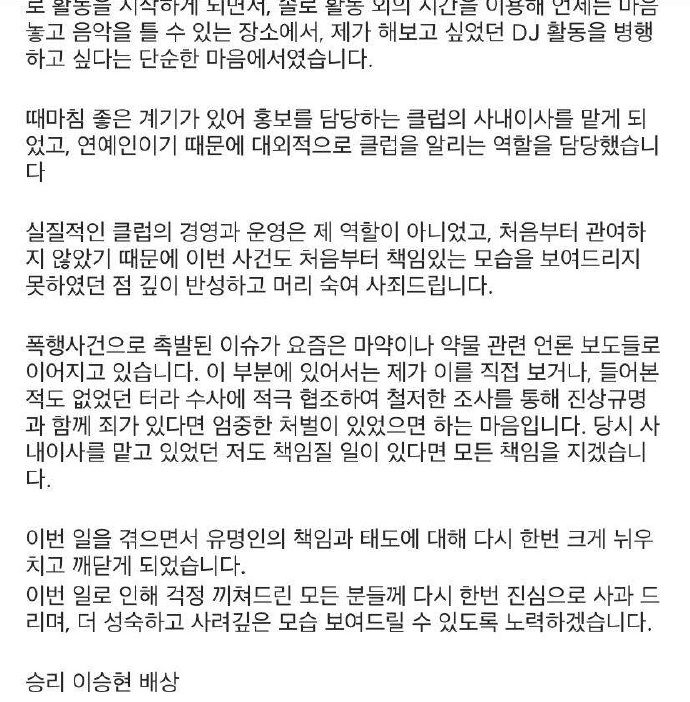

Seungri VS The World
所有非法犯罪行为合并：形成了这起重大案件的丑闻
主角：胜利、其他人的事件会回避
被涉及到Burning Sun丑闻的人员：
这家伙到现在还没删帖哦！


这家伙详细地为您指路他被暴打的地点


PS：监控录像于2019年1月28日放出
金尚教称：2018年11月24日为了庆祝朋友的生日去了Burning Sun夜店。在逗留期间，他看到一名疑似吸毒的女子躲避一名试图抓住她的男子。他抓住了那个男人的手，结果他被反打。于是他向保安（张某）求助，结果换来的却是他被拖到走廊被集体殴打。他在早上7:02报警，但是警察于7:10抵达现场后没有逮捕袭击者，反而逮捕了金尚教
尽管金尚教试图向警方澄清自己才是真正的受害者，但再次遭到警察的粗暴对待。他声称自己出血是由于警察的袭击造成的，但警方公布的监控录像并未显示涉嫌袭击发生的地点。警方随后否认有任何不当行为，声称金的鼻子流血是由于摔倒造成的。警方对金尚教提出了七项指控，包括刑事殴打、猥亵行为、妨碍公务执行和诽谤


最重要的是他一直把Burning Sun描述为“胜利的夜店”


录像拍摄于2018年12月1日
2019年1月14日
Burning Sun一名前员工将窃取的监控录像泄露到Instagram，录像显示一名女子疑似遭到Burning Sun员工的性骚扰、殴打并被拖走
详细资讯： KPOPPER'S GUIDE

2019年1月14日
首尔表演艺术学校（SOPA）是聚集了众多韩国明星的一所学校
首尔市教育厅指控SOPA校长利用学生举办私人聚会，并挪用非法活动所得资金
教育厅已要求学校基金会和执法部门调查此事，但SOPA校长否认指控
详细资讯： The Korea Times
2019年1月28日
《MBC新闻台》报道了金尚教在Burning Sun遭到袭击的监控录像
请注意此视频金尚教的行为：
- 01:19-02:09 他一直坐在绿色衣服A女士的后面并拿水瓶敲她的背后
- 02:56 他把手放在另一个B女士的腰上
- 03:45 B女士试图让他离开时开始发生了争执
详细资讯： Koreaboo
2019年1月28日
KBS报道补充警方到达现场后的录像：
- 4:51 警方抵达现场
- 6:22 注意看是金尚教先动手撂倒警察的
MBC曝光的Burning Sun的法定名册和公司内部组织结构图
俱乐部CEO为李成铉和李文浩，内部董事为姜XX和胜利，两名监察员分别为姜贤淑（胜利母亲）和金建浩。胜利是 Yuri Holdings 的联合创始人，该公司是运营该俱乐部的 Burning Sun的股东


为什么胜利会成为Burning Sun俱乐部殴打事件的舆论中心人物呢？
网友批评：当凌晨警察被叫来时，主人不可能不知道……ㅋㅋ

2019年1月29日
金尚教发起了第二次青瓦台请愿，收集了31万个签名
呼吁知情人士或曾遭受过GHB（强奸药）侵害的人向SBS举报，还敦促当局调查该夜店涉嫌强奸女性和贿赂警方等行为
详细资讯： Thread reader

客户询问女子被下药是否合法，销售员却声称没事，因为一切都已经和“上级”谈妥了

销售人员和客户之间一些药物的效果，会使受害者昏倒并失去所有记忆

金尚教还分享了一位自称是Burning Sun员工受害者的女子的故事：讲述了自己如何遭到一名员工性侵，但由于俱乐部删除了监控录像，最终无法报警

2019年1月29日
Burning Sun官方表示：此次事件发生时，一名俱乐部员工正在处理一名女性顾客提出的性骚扰投诉。我们代表俱乐部管理层，对俱乐部员工殴打该员工引发争议的行为表示诚挚的歉意和遗憾。我们已追究涉事员工的责任，并对其采取了纪律处分和解雇措施。我们将采取措施防止此类事件再次发生，例如对员工进行教育并完善安全保卫指南
详细资讯： Sisa Journal
非常眼尖的网友察觉到官方声明中也没有出现胜利的名字，而是写着李成铉和李文浩作为公司CEO
网友批评：自从媒体报道了这件事之后，他像蛇一样想溜走。我对他了解越多，就越觉得他烦透了
详细资讯： Koreaboo


2019年1月30日
Burning Sun相关人士向《京乡新闻》表示：胜利确实是Burning Sun的经纪人，但他并非真正的老板。Burning Sun目前有另一位老板。当时我们正在进行酒店内夜店的室内设计，听说胜利正在寻找管理夜店的机会，所以就提议让他一起管理。每个人都认为胜利是首席执行官。胜利确实参与了俱乐部的管理，但他实际上并不是俱乐部的老板
详细资讯： Soompi
2019年1月30日
Burning Sun员工透露：大约在2018年12月的最后一周，我们快要关门的时候，三名没有穿制服的警察来到俱乐部。他们说他们来调查，因为有人在里面被迫吸食大麻
VIP室是一个封闭区域，只有顾客在营业时间内才能进入。俱乐部没有对VIP顾客进行任何包袋检查，因此无法得知房间内的情况。俱乐部员工即使看到了什么，也可能保持沉默，因为他们的工作岌岌可危
详细资讯： Koreaboo

此外，在VIP室内配有独立卫生间
Burning Sun员工回应：视频里的卫生间灯和Burning Sun贵宾室卫生间的灯是一样的，视频刚发布的时候，工作人员也说是贵宾室的卫生间，不过看起来好像对视频发布并没有太过在意
详细资讯： Koreaboo
2019年1月31日
被网友抨击（逃避责任）后的YG发表声明
YG表示：公司难以核实事实，胜利告诉我事发当天他在夜店只待到凌晨3点，而金尚教的事情发生在早上6点之后。胜利辞去俱乐部高级主管一职仅仅是因为他必须为几个月后开始的义务兵役做准备。他对那些担心此事的粉丝们感到非常抱歉，并想写信道歉，但我告诉他要等等。我觉得等事件真相调查清楚后再正式发表评论才是明智之举
完整声明： Koreaboo
2019年1月31日
首尔地方警察厅SMPA已接手调查，调查内容包括江南区当地警方腐败以及与夜店老板勾结的指控，并已指派一个小组调查该夜店关于性暴力、吸毒、金尚教被捕以及与当地警察局的任何关联的指控
详细资讯： Koreaherald
2019年2月1日
MBC报道金尚教才是那个“性骚扰”的人
金尚教声称救了她的那名B女士却说，正是他性骚扰了她

视频中的性骚扰的男子正穿着与金尚教当晚相同的衣服
2019年2月1日
受害者上传了Burning Sun袭击事件以及工作人员对女性顾客使用约会强奸药物的证据

警方传唤金先生进一步调查该女子的说法
金尚教否认了女子的指控，并以身体虚弱无法接受讯问为由停止了讯问
警方表示：将指定广域搜查大队作为Burning Sun案件的专门调查组。我们通过彻底的内部调查来明确Burning Sun嫌疑所在
详细资讯： Naver
2019年2月1日
Burning Sun员工亲眼目睹女性在VIP卫生间被强奸
员工A：一名看似被下药的女子在与一名男子发生性关系时全身赤裸
员工B：我每月大约看到2至3次主桌的顾客吸毒。去年十月，一名男子给一名女子喝酒。后来，她口吐白沫，倒下了。她没有喝醉，但眼神完全失焦了
Burning Sun前经理否认：俱乐部里有人吸毒，简直荒谬。如果真有这种事，我们早就举报了
详细资讯： Koreaboo
2019年2月1日
Dispatch首次透露： Burning Sun前雇员提供的方便的聊天记录，以显示工作人员如何将女孩引诱到VIP房间并偶尔记录她们的性行为，以及他们确实为VIP客户提供约会强奸药物
员工之间的暗语：
“蜗牛”：指那些不一定有魅力但容易被攻击的女性
“打出本垒打”：指成功给受害者下药并强奸
总经理 (MD) 1：VIP 房间正在寻找mulge（漂亮女人）
MD 2：好的，我去找一个
MD 1：快帮我找一个
MD 1：我们不再需要了，找一个看起来不靠谱的人就行了
MD 2：那我去找只蜗牛
MD 1：帮我打个本垒打
员工在VIP室里观看并拍摄性行为。他们无法核实这起性行为是否是双方自愿的，但可以确认视频在工作人员之间流传
主任 A：现在看看那个房间。他们正在做爱
总经理 1：你怎么看出来的？
总经理 2：哇，这是真的
总经理1：这女人昏过去了
主管A：裙子掀起来了
总经理2：身材不错，就是脸太丑了
主管C：“我只在乎高级的
主管A：O桌那位女士看起来状态不太好，干掉她
警卫1：知道了
主管B：有人在勾搭我想搭讪的姑娘。派个警卫去抓他们
警卫2：知道了。我已经处理好了
当贵宾成功强奸女性后，他们更有可能再次光顾这家俱乐部。因此，医生们经常会给贵宾提供约会强奸药，帮助他们“本垒打”
详细资讯： Koreaboo
2019年2月2日
胜利在Instagram上发布了一封道歉信
他声称自己与俱乐部的管理关系不大。最初是以DJ的身份加入俱乐部，后来晋升成为了俱乐部的常务董事和宣传总监，并主动承担起了向公众宣传俱乐部的责任
详细资讯： 李昇炫Vworld


2019年2月2日
Burning Sun CEO 韩东元发表声明：
- 人身攻击确实发生了，工作人员被解雇了
- 不承认GHB
- 阐述了 Burning Sun 计划如何解决问题（例如关闭VIP室、通过增加闭路电视监控来减少盲点）
详细资讯： Instagram

2019年2月11日
朴志训的世界和我们
MBC Newsroom记者李文贤揭露Burning Sun吸毒强奸案及与警方的关系
安娜和胜利在夜店合影，被网友抨击
2019年2月13日
安娜是在Burning Sun担任MD，也是起诉金尚教性骚扰的两名女性之一，同时她被指控贩卖毒品

胜利表示：我当时在夜店，她约我合影，我就答应了。我不记得我们什么时候拍的，也不记得她是谁。在网上、社交媒体和线上社区里有无数我和粉丝的合影。我在夜店的时候，很多人会主动上前要求合影，我通常都会答应
警方表示计划对安娜进行调查，但目前无法联系到她。她去年因涉嫌吸食大麻而面临指控，但已获缓刑。她的护照已过期，她现在是以非法入境在韩国
详细资讯： Soompi


2019年2月16日
警方对安娜进行了14小时的讯问，指控她涉嫌向VIP顾客贩卖毒品，包括该俱乐部工作人员向女顾客注射约会强奸药（GHB），以帮助男性VIP顾客强奸她们
她否认了所有指控，警方还搜查了她的家
随后她走进首尔东部警察厅毒品调查部门的办公室，就其涉嫌在俱乐部贩卖毒品一事接受讯问
详细资讯： The Korea Times

2019年2月16日
胜利在首尔演唱会开始前向粉丝道歉：
我想谈谈最近的争议。我觉得如果我不说，今天到场的观众会感到不舒服。我向所有关心我的人表示深深的歉意。我很抱歉让这么多人失望，我正在反思。尽管存在争议，但我的行为并不负责任。尽管争议发生在我公开谈论过的地点，但我的行为并不负责任，为此我感到羞愧和后悔。这一切都源于我的疏忽。作为艺人，我以后会更加谨慎思考和行动。对于之前的不谦虚和鲁莽行为，我深感抱歉。过去一年，我一直竭尽全力为大家带来幸福，却让大家失望了，我深感惭愧。再次向大家道歉，我会铭记在心。我为此做了很多准备，如果大家能喜欢这场演唱会，我将不胜感激。我想这会让我感到所有的努力都值得
详细资讯： Soompi
2019年2月17日
SOPA的学生在YouTube上发布了一段视频，希望引起人们对校长及其妻子在学校实施的犯罪活动的关注
一千万的播放量
2019年2月22日
SBS报道：前警察因向江南警察提供Burning Sun的贿赂而被捕
2019年2月24日
金贤重新闻秀
警察与成人娱乐业之间有贿赂
假 聊天记录
歌手C：后来被曝是FTISLAND成员崔钟训
金：Burning Sun员工
刘会长：刘仁硕

首尔警察局已对卖淫指控展开调查，胜利已被列为重点调查对象
详细资讯： Korea Herald
2019年2月25日
Yuri Holdings否认群聊中的招募妓女贿赂投资者的报道
YG表示：经与胜利本人核实，报道中的短信内容纯属捏造，不属实。我们将秉持一贯立场，严厉打击一切散播、转载谣言包括虚假新闻的行为
详细资讯： The Korea Times
《SBS funE》主持人姜庆允反驳：我没有理由捏造这些文字，除了淡化一些严重粗俗的表达方式外，绝对没有任何纂改或编辑，全部都是事实
详细资讯： The Korea Times
2017年2月19日越南的报道再次浮出水面
胜利好像在挖鼻孔哈哈哈就被说成吸毒了


#第1次传唤
2019年2月26日
警方私下传唤胜利调查
警方表示：我们将彻底审查媒体报道的内容、短信聊天室中出现的人员姓名、胜利涉嫌向外国投资者提供卖淫服务。胜利承诺将全力积极配合调查，洗清所有不实传闻
详细资讯： Koreaboo
2019年2月26日
YG昨晚收到胜利的声明：我对过去几个月卷入的所有丑闻表示歉意
YG警告称：如果胜利所有指控被认定有罪，他们将对散布这些荒谬故事的人采取严格的法律行动
详细资讯： Koreaboo
2019年2月27日
YG否认胜利吸食笑气：经向胜利确认，照片拍摄角度存在误导。胜利表示自己从未吸入过笑气。越南方面的报道明显是虚假报道，他感到自己受到了莫大的诬告，在夜店这样的公共场所吸入笑气是没有道理的
详细资讯： Soompi
#第2次传唤


一名记者称胜利出现时眼神中充满了愤怒。？

2019年2月27日
姜庆允（爆料聊天室的主持人）做客SBS《恋爱FM李在益的政治秀》
她表示：如果我捏造了它，我失去的（比得到的）会更多。我会失去一切，这就是事实。作为一名娱乐记者，我不能让自己在公众面前显得那样，所以我会克制自己
详细资讯： Koreaboo
2017年12月9日菲律宾巴拉望岛的生日派对
2019年2月27日
胜利在度假村住三天，总共花费了444083美元，原价504570美元的折扣价
除了这笔费用外，警方发现胜利向派对的女伴支付了超过旅行费用金额
：机票、DJ出场费、酒的费用、生日倒计时期间燃放的烟花的费用
这意味着这笔额外的钱可能是用来换取卖淫的（提供性工作者）
女伴：胜利为贵宾提供商务舱机票。女客人则坐经济舱，她们夸耀自己花了大约45万到55万美元
详细资讯： Koreaboo
报道的tag加了#Burning Sun #胜利（指名道姓、不必多说）
2019年2月27日
《朝鲜日报》抓拍到YG员工在早上6点将数十个箱子送入碎纸机
（通常是早上9点）
现场记者声称：仅在两个小时内就处理了大约4吨垃圾，他们不得不再开一辆处理卡车回来。你们在一个月甚至几个月内就产生了超过4吨的垃圾。他们都准备了什么样的文件？处理电脑就更加可疑了。YG会声称他们也经常这样做吗？对于一家财务状况不佳的公司来说，重新利用会是更好的选择。除非你害怕硬盘里的东西。我不是说YG违反了任何法律，但他们肯定没有帮助他们的案件显得不那么可疑
YG反驳：文件粉碎工作只是季度例行公事

2019年2月28日
胜利取消了大阪和雅加达的演唱会
大家好，这里是YG娱乐。胜利遗憾地取消了原定于3月9日、10日在大阪、17日在雅加达举行的演唱会，恳请等待演唱会的各位朋友给予谅解。胜利昨天晚上9点左右主动来到警察局，在约8小时30分钟的时间里认真参与了警方对嫌疑的调查。胜利恳请警方特别严密调查卖淫活动的嫌疑。不仅演唱会，胜利还将暂停所有其他预定的活动，并积极配合警方即将开展的所有调查。由于这些都是很多人好奇的疑点，我们希望通过警方迅速而严谨的调查，尽快揭开所有疑点和真相
详细资讯： Soompi
#第3次传唤
谣 言
2019年3月1日
《SBS funE》透露举报人已向反腐败和公民权利委员会提交胜利订购性陪同服务的短信，他怀疑胜利与警方有着深厚的联系
但首尔地方警察厅表示：我们尚未获得KakaoTalk信息的原件。我们正在联系相关人员，以确认原件的存在。我们不仅没有确认其存在，而且还收到了此类信息不存在的证词
详细资讯： Soompi
这标签打得、意义不明！
2019年3月1日
Be.A 成员 Yeongkyun 疑似公开内涵胜利
你告诉我，你会作为我的前辈，当着所有工作人员的面给我建议。你不是和我同龄吗？你告诉我，如果我已经这么努力了却仍然没有结果，我最好学一门手艺，因为我应该赚钱孝敬父母。你说那是建议，但那更像是把匕首刺进我的心脏。现在，你在公众面前把这一切都拿回来了，而且更多。我一直对父母很好 =) 有时候，回报他们并不总是用金钱 ㅎ 谢谢你让我明白，一个人应该永远保持谦逊 =) #burningsun #dater*pedrugs #prostitution


2019年3月4日
首尔警方确认：Kakaotalk信息已将根据反腐败和公民权利委员会内部讨论的结果转发给警方
举报人已将这些文件提交给该委员会位于首尔的办公室，目前正在将其转交给世宗市办公室
详细资讯： Soompi
这意味着从今天起这件事正在演变成一个比胜利本人更大的事件
2019年3月5日
韩国总理李洛渊在国会发表评论：江南区一家Burning Sun夜店发生的一起袭击案，目前正被揭露涉嫌贩毒、性侵以及警方与夜店老板之间的腐败行为。我希望警方将此视为对其自身荣誉的侮辱，并依法进行彻底调查。我希望调查人员在调查过程中，能够牢记，如果这些非法活动的嫌疑得不到彻底解决，将会带来怎样的后果
详细资讯： r/kpop
❗这个片段在全球的热度高达100万以上哦❗
2019年3月7日
BIGBANG 2017 CONCERT LAST DANCE IN SEOUL
胜利做MC期间哥哥们怼胜利的一些“玩笑”，被有心人做文章了~~
GDTOP百度知道团队 翻译得不准确....
胜利：我们跟VIP粉丝们约定一下，不要把胶鞋穿反了。Bigbang也是由五个韩国男人组成的团体，（军队）是每个人都会去的地方，所以我们都会去，也会回来
其他成员：你能不能别再说这个了？别说了
胜利：如果你们敢作弊，我会把我的孩子们叫来。我认识的清潭洞有很多可怕的孩子，江南站也有认识几个
详细资讯： Insight
网友辣评：他无意识地暴露了自己的人际关系
现在看来，哈哈，那真是一个威胁，哈哈
2019年3月7日
MBC查阅Burning Sun的会计账簿后，对胜利2月2日的声明提出质疑
胜利在Burning Sun的创立过程中拥有大量股份，并投资了2.25亿韩元
同时担任联合CEO的Yuri Holdings持有Burning Sun 20%的股份
Burning Sun的一位消息人士表示：很明显胜利是早期投资者，这份报告似乎是因为与大股东和Jeonwon Industries（多数股东）的官员共享而做出的
详细资讯： Soompi


🤬Burning Warning🤬
— 불꽃페미액션🎗️ (@flaming_femi) March 8, 2019
약을 먹여서라도 여성을 강간하고자 하는 남성들의 강간문화를 절단하는 "강간문화 컷팅식" 영상을 공유합니다. pic.twitter.com/j4urJ92rMS
2019年3月8日
韩国民众在街头从 Club Arena 游行至 Burning Sun
抗议韩国俱乐部的强奸文化
2019年3月9日
警方发言人在新闻发布会上表示：我们已登记李胜利，并将其身份变更为犯罪嫌疑人，以便签发搜查令并洗清李胜利的嫌疑
这些指控可能判处三年监禁，警察还没收了他的护照，并禁止胜利出镜
详细资讯： Variety
#第4次传唤
假 聊天记录
2019年3月10日
《SBS funE》再次报道了Kakaotalk聊天室
大约有十起非法拍摄的隐藏摄像头视频和照片，其中一些视频和照片是在胜利和其他艺人所在的聊天室里分享的

2019年3月11日
当胜利被列入韩国警方对夜店卖淫案的调查名单后，
YG公司的股价应声下跌14%，跌至37150韩元
自2018年11月23日以来，YG娱乐股价首次跌破4万韩元
详细资讯： Koreaboo


胜利发文不久后，
YG对YTN说：胜利的隐退发表不是和YG讨论决定，而是他自己做出的选择。因为是入伍前夕发生的事情，所以更加痛苦。事实上，在这一个半月的时间里，警察调查关于胜利相关的事件时，是还没有得出确切证据的状态。特别是胜利觉得对周围的人造成了伤害而感到非常辛苦
详细资讯： 李昇炫Vworld
有趣的来了..！

#第5次传唤

2019年3月12日
记者金永浩透露：Naver向YG投资1000亿韩元，是因为Naver总裁儿子李承周签约了YG旗下的Black Label
Naver不希望YG被贴上负面标签（减少舆论的曝光度）
所以这就是为什么Naver上没有关于胜利丑闻文章的原因
详细资讯： Netizen Buzz
2019年3月13日
律师方正铉在中表示：Kakaotalk聊天室暗示与警方存在联系
这些聊天记录是在郑俊英送手机去维修时被窃取的
他收到了最初举报人的邮件，称他们掌握了Burning Sun事件相关人员的数据，希望公开这些信息以寻求正义。他担心果将数据发送给调查机构（警方），他们可能会专注于查明举报人的身份。因此他决定将数据发送给反腐败和公民权利委员会
详细资讯： Soompi
他是一位代表匿名的原始举报人向反腐败和公民权利委员会发送KakaoTalk对话数据
韩国警察厅长官举行的新闻发布会证实：一名聊天室成员确实提到了与警方的联系

2019年3月13日
（聊天室里的）前警察总长姜信明否认他与胜利、郑俊英、崔钟训的聊天室有牵连的指控
现任总警长闵甲龙召开新闻发布会承认过去高层官员可能存在滥用职权包庇名人的情况，将进一步调查
详细资讯： Allkpop
#第6次传唤
2019年3月14日
韩国时间下午2:00，胜利本人抵达首尔警察厅
接受违反《卖淫嫖娼处罚法》等指控的调查
长达16个小时的审讯，次日早上6:14回到家中
胜利表示：我已忠实地完成了调查。从今天起，我计划正式向兵务厅提出延期入伍的申请。如果获得批准，我将延迟入伍日期，并忠实地参与调查，直至最终结果
（胜利必须在入伍日期前5天，即3月20日之前提交申请）


我微博主页有P1无水印图 #生无可恋
这俩图真绝了、哪家媒体拍的？出来挨夸！
假 聊天记录


由于敏感问题，只有部分内容被披露
胜利随后向 A 首席执行官发送了女孩们的照片
半真半假 聊天记录
同时爆料胜利在国外有赌博的习惯，多次前往拉斯维加斯丽都酒店赌博
但胜利违反了韩国的《外汇管理法》轻度但成立的违法事实
“储蓄银行”就像是赌场管理的交易市场，很多外国赌客把钱存放在那里


违反《外汇交易法》的行为如下（满足两个条件被认定违法）：
1. 第18条：未通过韩国外汇合法申报渠道兑换或汇出资金（若携带10亿出境必须申报）
✅胜利涉及的金额超过100万美元（约11.8亿韩元），并且没有进行申报
2. 第8条：通过非正规渠道（黑市、私人兑换商）兑换外汇
✅胜利使用未经申报和非法渠道兑换的美元进行赌博
《韩国刑法》有关赌博的明确规定：
1. 第246条 赌博罪：若赌博只是一时消遣性质的小额赌博则不处罚
2. 第247条 常习赌博罪：有持续性或反复赌博行为
✅胜利在2013年12月-2017年8月期间在拉斯维加斯丽都酒店八次赌博，累计188.3万美元（约22.2亿韩元）。当时胜利每次下注金额在5百-2.5万美元之间
提前剧透：
《常习赌博罪》+《外汇交易法》= 被判1年6个月有期徒刑
不存在什么胜利是勉强安上的罪名！！！
2019年3月14日
现任总警长闵甲龙宣布计划调查警察部队的腐败问题，并对韩国各地的俱乐部进行全国性调查，调查毒品、性侵犯、拍摄和传播隐藏摄像机视频以及与警方的关系等问题
首尔中央地方检察院从警方接管Burning Sun事件
详细资讯： Allkpop
韩国割席这一块/.
胜利一出生就是歌手/演员身份好了吧
前后对比
小说《Made in Gangnam》取材于真实事件（Burning Sun）
小说背景：作家朱元圭本人是一位牧师，致力于帮助弱势青少年，他以送货司机的身份潜入了其中一家高档俱乐部，并发现了在那里工作的年轻应召女郎所遭受的可怕待遇。揭露了在奢华的表面之下，一个被权力和金钱腐蚀的、难以想象的不人道和暴力的世界
2019年2月18日：在韩国出版
2021年5月6日：在法国出版
详细资讯： Apple - Good Reads
假 聊天记录
2019年3月15日
《News A》报道称：日本建筑公司“K”的官员访问韩国时，胜利曾在Burning Sun餐厅招待他们，胜利将韩国女性送往日本从事卖淫活动
举报人是江南区一位知名商界人士一直在密切关注胜利的活动
详细资讯： Koreaboo
胜利团队的一位消息人士否认：这从未发生过，他只是K公司CEO的朋友
详细资讯： Soompi
#第7次传唤
2019年3月16日
LVMH（YG的股东）不满自从丑闻爆发后YG的投资损失超过550亿韩元
要求杨贤硕和公司赔偿他们遭受的重大损失
民间团体“民生措施”也向首尔中央地方检察院提起诉讼，控告杨贤硕在丑闻中存在疏忽行为
民生措施代表表示：一个在社会上具有巨大影响力的公众人物，如果缺乏伦理道德，就不应该受到保护。一直以来，公司都否认与名人不当言论和越轨行为有关
详细资讯： Koreaboo
2019年3月17日
于2015年12月9日在Club Arena涉及的A女士表示：胜利的熟人金某把我介绍给了一个据说是外国体育队老板女儿的人，我们一起喝了酒。我不是妓女
详细资讯： Koreaboo
2019年3月18日
于2015年12月9日在Club 因为Kakaotalk聊天室的性贿赂事件，韩国民众开始关注以前男性滥用职权的案件
比如2009年演员张紫妍自杀身亡的案件，她生前指控经纪人强迫她向31名知名娱乐人士和记者提供性贿赂
引发民众要求重新调查性侵案件的呼声，并发起了请愿活动，最终收集超过67万个签名
详细资讯： The Korea Times
同时促使韩国总统文在寅发布紧急命令重新调查张紫妍案件，同时也 下令对Burning Sun进行彻底调查
首尔地方警察厅在新闻发布会上表示：已逮捕40人因吸食和贩卖毒品
警方还透露，其中9人参与了强奸药（GHB）的分销
详细资讯： Soompi
#第8次传唤
2019年3月18日
SBS《8 点新闻》播出3月2日的节目披露了崔钟训与尹警官与妻子金警官、刘仁硕与妻子朴寒星曾一起打高尔夫球和吃饭（尹警官的妻子金警官是在马来西亚担任执行警官）
崔钟训：尹先生的妻子和孩子们住在马来西亚。所以当我们组合在那里开演唱会时，我就给了他们门票。刘仁硕告诉我，尹先生在青瓦台的地位很高。他说我应该好好对待尹先生，跟他说话时要用敬语，还要给他提供门票
媒体肆意宣传崔钟训=李胜利与尹圭根打高尔夫球+贿赂给演唱会门票，导致警方后续的调查被带跑偏🤣
尹警官后来表示：虽然我确实与崔钟训和刘仁硕一起打高尔夫球（只有两次）和吃饭，但他并没有提出诸如门票之类的要求
详细资讯： Koreaboo
2019年3月18日
朴寒星自从被崔钟训点名与尹警官有密切来往后，这是因为朴寒星在此前就说过「不清楚老公（刘仁硕）的私生活」
网友要求将朴寒星从电视剧《悲伤的爱》中移除
但她和电视剧制作团队都表示不会退出
详细资讯： Koreaboo
2019年3月19日
网友开始翻旧账，怀疑胜利穿尹高级警司的衣服，有着特殊关系
2019年3月19日
胜利接受《Sisa Journal》的电话采访
胜利和律师否认了有关卖淫和赌博的指控，称自己只是“虚张声势”，想在朋友面前显得自己很酷
1. 这一切都是从聊天室的内容开始的，对吧？就像我在聊天中拼错了“警察局长”一样，我们只是一群互相虚张声势、炫耀的傻瓜
2. 这些事情引发了舆论，说我涉嫌逃税和与警方勾结。说实话，我现在的处境是，即使我说了实话，也没人会相信。就连调查人员都认为KakaoTalk的内容都是真实的
3. （叹气）我担心自己因为出名和明星的身份，无法得到公正的评判。因为对韩国民众感到抱歉，所以我不是处于一个无法抱怨不公、无法反驳的境地吗？最后，补充一点，没有海外赌博，也没有卖淫服务
同时也对胜利的律师孙炳浩进行采访：
“A某”曾请求胜利介绍一位女性陪他前往印度尼西亚，胜利拒绝“A某”。最终还是和胜利一起去了印度尼西亚，但是没有任何女性陪同。所谓赢钱的留言和照片，不过是虚张声势、炫耀的谎言。为了拿回投资胜利的20亿韩元，“A某”拖了胜利近两年
详细资讯： Soompi
《Sisa Journal》补充胜利发了一条消息说：“我错了。我不应该和那些人扯上关系，做那些事。”
这句话的杀伤力..
胜利呀🥺我真的看哭这段采访了，可惜没有放出电话录音
李成铉和李昇炫名字高度重合、所以很多人以为这件事是胜利干的
2019年3月19日
MBC《Newsdesk》透露2018年7月7日未成年人进入Burning Sun的电话谈话内容，胜利被告知了未成年顾客进入夜店的情况
李成铉承认在因未成年人进入夜店而接受调查期间，他向一名警察贿赂了2000万韩元
警方正在分析通话录音，并以涉嫌未成年人入境等罪名对李成铉展开调查
详细资讯： Soompi
#第9次传唤
2019年3月19日
警方收到《朝鲜电视台》关于胜利涉嫌在Burning Sun吸毒的证词
警方认为证词可信，但由于没有披露时间和地点，他们难以全面调查吸毒指控，再加上胜利也坚称自己没有吸食任何毒品
于是，首尔地方警察厅地方调查组私下传唤胜利进行问询
详细资讯： Soompi
2019年3月19日
两名与胜利在拉斯维加斯丽都酒店赌博的韩国营销人员已返回韩国
警方认为这两名营销人员知道胜利前往丽都酒店的频率，以及他花费和赢取的金额
“营销人员”向那些想要规避美国《外汇交易法》的外国豪赌客户提供资金。作为交换，“营销人员”会根据客户赢取的金额收取佣金。入境美国的旅客可以携带1万美元入境，无需向海关申报
警方还怀疑这两名“营销人员”返回韩国的原因之一是试图追回胜利在拉斯维加斯时借给他们的钱（因为胜利已退圈）
详细资讯： Koreaboo
Cosmopolitan网站列出当时赌场聘请的营销团队
胜利呀🥺谢谢你的坚持
2019年3月22日
《MBC新闻台》报道一段非法拍摄的Burning Sun夜店性侵犯视频
当警方对Burning Sun展开进一步调查后，这些工作人员删除了视频，并开始销毁更多证据
Burning Sun顾客称，为了安全起见他们把视频从手机转移到了电脑上，然后又注册了一部新手机（由第二名工作人员注册）提交给了警方
警方计划扣押这两部手机，但手机主人拒绝在聘请律师之前将手机提交法医分析和修复
详细资讯： Koreaboo
假 聊天记录
2019年3月24日
尹警官的妻子金警官否认与崔钟训打高尔夫球，但确实收下了崔钟训给的演唱会门票
首尔地方警察厅表示：我们目前正在调查她关于高尔夫球的否认以及她获得门票的途径
详细资讯： Koreaboo
#第11次传唤
2019年3月26日
胜利被警方传唤进行调查询问，在警察局待了3小时30分钟
这次被新闻报道不是因为涉嫌罪名，反而是因为化妆了而被批评 :D
起因是胜利前往警察局前，到Bigbang常客江南区的一家美发化妆店进行造型和化妆
证人A：我很惊讶地看到有人参与公共事务（如调查）时化着浓妆，就像参加某个大型演出一样。这与警察局里出现的其他明星、富豪截然不同。胜利在化妆时提出了额外的要求，要求他的眼妆更浓一些
证人B：问题不在于妆容本身，而在于胜利似乎丝毫没有愧疚之心。看到明星毫无悔意，真是让人心酸
胜利化妆师：当一个人去警察局，记者成群结队地，会让人感觉很累。就连平时化浓妆的明星，去警察局也会化浓妆。在警察局化浓妆，就像一个象征，表明这个人认为自己没有做错什么
发廊负责人出面澄清：胜利接受问询前确实到发廊化妆，但并未如报道所称化全妆。胜利他看起来很疲惫，我们只是帮他捋了捋头发，做了一些简单的遮瑕，比如遮住黑眼圈🤣。他当时很辛苦，话也不多
详细资讯： Koreaboo
2019年3月28日
警方掌握了A先生在Club Arena所保留的一份涉嫌卖淫女性员工名单
A先生负责协调和管理在胜利菲律宾生日派对上涉嫌卖淫的女性
她们每人获得了400万韩元的海外旅行报酬，以及200万韩元的韩国俱乐部工作报酬
A先生承认了这些指控
详细资讯： ILYO
2019年3月28日
首尔地方警察厅举行简报会表示：胜利追加了非法传播照片的罪名
警察未确认真实性：群聊里有很多，除了郑俊英的聊天室，还有其他聊天室发的。我们正在确认胜利是否拍摄了这些照片
详细资讯： Koreaboo
2019年3月28日
权赫俊在首尔钟路一家咖啡馆接受了采访，谈到了他对胜利和Burning Sun丑闻的看法
由于偶像受到众多年轻人的羡慕和崇拜，因此他们需要有强烈的责任感和良好的自制力，种权利意识完全取决于个人心态。明星最终需要的是人气，但如今很多人误解了这一点。由于明星的行为影响力巨大，无论他们是否愿意，他们最终都会成为公众人物。因此，他们必须在行为上保持自律。胜利也一样。虽然他还年轻，但他身边的人都在夸大他的虚荣心，试图利用他的人气为自己谋利。如果创业时身边有这样的人，事情就很容易出错。我有很多上司也陷入了类似的境地，最终负债累累。他们可以更加努力地演戏或唱歌。我不知道他们为什么要去做其他类似的生意
详细资讯： Koreaboo
一个关于警方与Burning Sun勾结的故事
2019年3月28日
一名女子于2018年12月23日凌晨1点在Burning Sun接过两名中国男子递给她的香槟
她在次日早上10点醒来时发现自己失去前一晚的记忆
于是前往江南警察局要求进行药物检测，结果为阴性
警察看过检测试剂盒后当着她的面扔掉了，只是告诉女子可以回家了
女子的父亲得知此事后，立即向警方报案质问
但警方对此坚决回应：Burning Sun不是吸毒的地方
警察告诉女子可能是约会强奸药物，但如果这两名中国人回国就找不到他们了
女子非常怀疑，但因为他们告诉她，她遭到袭击的整个过程都被监控录像拍了下来。她认为是自己在醉酒时犯了一个错误，最后不了了之，只好离开了警察局
警匪勾结丑闻爆发后的2月27日，女子向首尔中央地方法院起诉了警察玩忽职守
女子表示：我怀疑警方与Burning Sun勾结，没有对毒品进行妥善调查
江南警察反驳：当时我们做了6次药物检测，结果均为阴性。我们告诉她如果她觉得结果可疑，就去医院做一次全面的体检。因为检测结果呈阴性，所以我们没有记录
详细资讯： Koreaboo
2019年4月1日
胜利和刘仁硕因涉嫌挪用首尔江南区开业的 Monkey Museum 资金
警方怀疑这笔钱用在了胜利于2017年的菲律宾生日派对上
警方还掌握了胜利的一名朋友在菲律宾生日派对与那其中的一名女性发生性关系的供述，但除了旅游经费以外，并未发现其他的金钱往来
详细资讯： KBS World
第13次传唤
卷毛胜啊啊啊啊~~
保镖家虎也在场哦！
#第14次传唤
2019年4月4日
胜利因涉嫌销毁证据被首尔地方警察厅道特别侦缉科传唤进行讯问
Kakaotalk聊天室被曝光后，胜利曾在2月26日要求聊天室成员更换手机
郑俊英、崔钟训向警方证实：是胜利让我换手机的
背如刺这块/.
朱永杰律师表示：在这种情况下，对胜利毁灭证据的行为进行处罚可能很困难。如果发现崔钟训、刘仁硕或任何聊天室成员是为了自保而不是为了掩盖胜利的罪行而丢弃手机，那么法律将不适用于胜利，因为这不构成毁灭证据
详细资讯： Soompi
2019年4月5日
申基铉在Instagram直播表达他对胜利及其丑闻的立场
（两人在2005年Mnet《Battle神话》认识的）
他说：很多人问我，为什么胜利爆出丑闻后我没有取消关注他，不过我想问一下，如果你的朋友犯了罪，你能直接和他断绝关系，不再做朋友吗？胜利仍然是我的朋友之一，在我需要的时候伸出了援手。我觉得这个问题没有正确答案。既然他犯了罪，就应该受到惩罚
详细资讯： Koreaboo
2019年4月7日
《韩联社电视台》证实：胜利在Burning Sun的影响力比此前预想的要大，驳斥了他此前在Instagram上发布的关于其在俱乐部管理中作用较小的说法，这一证据与胜利声称自己只是俱乐部的推广人员的说法相矛盾
Yuri Holdings原本计划将20%的股份转让给林书豪，但由于林书豪是外国商业伙伴等问题，导致转让过程被推迟，之后股份被分割
详细资讯： Koreaboo
2019年4月9日
胜利被KBS列入限制或禁止出现在KBS频道相关任何节目的人员名单
根据出演限制审议委员会的规定，如果艺人有不道德的行为，值得社会谴责，KBS可以对其采取警告、暂时限制或禁止其出演的措施
详细资讯： Soompi
截止今日，胜利的罪名有：
卖淫中介、非法拍摄、挪用公款、违反《食品卫生法》、销毁证据
仍在调查中的罪名：
贿赂、逃税、违反《反贿赂反腐败法》
小池因为这个事情才辞职的、求大家不造谣小池跟胜利一同辞职
2019年4月13日
YG已终止了池某在公司的雇佣关系
1. 池先生在YG任职期间曾担任胜利的经纪人（现已不再是该公司员工），因此其工资当然由本公司支付
2. 由于我公司与胜利的个人事务没有任何关联，因此我们不知道池先生还担任Yuri Holdings的监督员，也不知道他从胜利的业务中单独领取薪水
3. 我们自己也是最近在争议爆发后才意识到这些事实，并且终止了与胜利的专属合同，同时也终止了池先生与我公司的雇佣关系
详细资讯： Soompi
警方更新近期的调查情况
2019年4月15日
胜利与刘仁硕和尹圭根曾四次一起打高尔夫球（此前尹圭根说只有两次）不要认错人！！做这些事情的人是崔钟训
共六次一起吃饭，胜利也参加了其中四次吃饭
2019年4月16日
胜利被警方怀疑在派对为海外投资者安排卖淫
首尔地方警察厅地方特别侦缉科收到了证人证词，该派对存在邀请一些女性陪同人员参加
但这些陪同人员的银行账户证实了她们收到了报酬
警方表示：胜利并没有安排性服务，但他确实在明知可能发生的情况下打电话给她们，结果发生了实际的性行为。这些女性是职业陪同人员，而非胜利的非名人熟人。她们仍在从事这一行业，此次事件很可能被视为拉皮条
详细资讯： Allkpop
2019年4月19日
一位名叫李女士受胜利的熟人邀请参加了一场聚会
她被下药、强奸，这些画面被金先生非法拍摄并分享到聊天群
金先生在调查期间向警方声称，性行为是双方自愿的
胜利的法律顾表示：胜利他不记得发生了什么，因为事情过去太久了
详细资讯： Koreaboo
2019年4月21日
胜利被指控2015-2017年期间在梨泰院酒吧举行一氧化二氮致幻派对（2017年6月前合法）
酒吧员工A：胜利总是会带上数量相等二十出头的女孩，每个男人身边都会跟着一个女孩，他们一起吸着快乐气球和喝酒。他们会从酒吧入口处拿一盒胶囊，然后把它带到后面角落的桌子上，用提取工具做出快乐气球的形状，然后吸入。胜利的团队会公开在他们的桌子上使用一氧化二氮胶囊并举行幻觉派对
酒吧员工B：2016年初，胜利的朋友金先生对桌上的人说：“我带了约会强奸药。”我警告他：“别在我们酒吧用。”过了一会儿，我看到金先生扶起一个站不稳、摇摇晃晃的女人
酒吧员工A：2017年年中之后，他们便很少再光顾这家酒吧了。到2018年2月Burning Sun酒吧开业时，他们就完全不再光顾了
详细资讯： Koreaboo
2019年4月24日
又有报道称Burning Sun雇佣了焚烧队，用于清除非法证据
焚烧工作的同事表示：清理人员的主要任务其实是清理休息室里的血迹。他回忆起自己亲眼目睹休息室里一名昏迷不醒的女子流血不止，一边输血，一边被人拍摄
详细资讯： Koreaboo
#第15次传唤
2015年12月24日的“胜茨比”圣诞派对
2019年4月24日
警方称胜利在“胜茨比”圣诞派对使用YG公司信用卡支付3000万韩元为日本商人支付首尔酒店费用并招揽卖淫
当时7-9位日本投资者到访韩国，刘仁硕在他们入住期间安排了十几名妓女进入他们的房间为他们服务
警方私下传唤胜利和刘仁硕针对此事询问
刘仁硕你下辈子能不能对我们胜利好一点！
刘仁硕出卖胜利表示承认卖淫中介活动、胜利只承认支付酒店账单（不知情有妓女）
详细资讯： Chosun
2019年4月25日
首尔地方警察厅官员表示：我们已对17名涉嫌卖淫的女性进行调查立案。她们大多已承认卖淫罪名。这17名立案的女性中，有一部分是因卖淫罪被带走，一部分是接受卖淫调解
详细资讯： Soompi
2019年4月25日
金熙俊律师针对胜利吸食笑气评论：如果他吸食非法毒品，最高可判处5年监禁。如果多次吸食毒品，最高可判处7年零6个月监禁。他的可能刑期很可能就在这个范围内
但是；
快乐气球不属于药物，但它属于化学物质。它通常被用作牙科等场所的麻醉剂。吸入后，你会感觉自己漂浮在空中，持续3到4秒
如果他在“快乐气球”被认定为非法（2017年6月）之前使用过，那么他就不会被起诉。如果他在该日期之后使用，那么他可能会因违反禁止非法使用毒品的法律而被起诉。由于时间已经过去很久，而且很难获得有效、公正的证据，因此对他提出指控可能会很困难
详细资讯： Koreaboo
2019年4月29日
警方计划在本周内结束对胜利的调查，即将对胜利发出逮捕令
首尔特别市公安局局长元庆焕在新闻发布会上表示：逮捕令将取决于调查的最终结论，法院将根据警方提交的任何申请决定是否发出逮捕令
详细资讯： Soompi
这个派对的浏览数量高达10万 :)
2019年5月1日
GD此前在《黄金渔场》说过关于“胜茨比”圣诞派对
如今这场派对被涉嫌为日本投资者招揽妓女，令网友“毛骨悚然”
媒体辣评：胜利的生活越来越像《了不起的盖茨比》的一面镜子，主角最终从他的神坛上跌落
详细资讯： Chosun
#第17次传唤
2019年5月2日
首尔地方警察厅智能犯罪搜查队掌握了去年Burning Sun账户中流出的资金流入了Monkey Museum账户，挪用了Burning Sun的5.28亿韩元资金
并以员工律师费为名，挪用了Yuri Holdings公司的2200万韩元资金
详细资讯： Koreaboo
造 谣 演都不演了
2019年5月13日
Newsen报道胜利曾在私人场合声称一旦赚到4000亿韩元就会退出娱乐圈
虽然这个说法尚未被证实，但Newsen怀疑他是否因为急于脱离演艺圈、想尽快赚到目标金额，而采取了一些非法或不当的手段
详细资讯： Koreaboo
到这里的第一轮闹剧结束了！接下来请收看胜利这个倒霉熊的三年
2019年5月15日
MBC获得了胜利的逮捕令副本
根据逮捕令，胜利被指控在2015年12月至2016年1月期间积极招揽卖淫
从2015年12月开始，胜利开始为台湾投资者安排女性招待。刘仁硕请来了两名女性，并向一名经纪人支付了360万韩元
几天后，9名日本投资者抵达韩国，刘仁硕再次进行招妓活动。日本投资者的3700万韩元的酒店费用由胜利用YG公司信用卡支付
警方确认共发生12起卖淫案件，共计收取43百万韩元作为服务报酬
详细资讯： Koreaboo
刘仁硕你下辈子能不能对我们胜利好一点！
2019年5月23日
刘仁硕自爆：我于2015年12月23日雇佣了两名妓女来到胜利的公寓
他说：我打电话给这些妓女，测试她们的质量，然后在第二天雇用她们给日本商业伙伴
涉嫌妓女：我们按照老板娘给的地址去了，发现胜利和刘先生在那里。他们各自选了房间，然后我们两人一组，各自进了房间
详细资讯： Koreaboo
2019年5月25日
Burning Sun改名为Label在同一街区重新营业，并提供相同的服务
Burning Sun和Arena的前员工都被发现在Label工作
MBC推测Label可能仍在进行同样的非法服务
详细资讯： Koreaboo
2019年5月27日
MBC《Straight》节目采访李小姐，她声称自己于2018年12月15日在Burning Sun参加派对时被胜利的泰国商业伙伴Bob下药、强奸和威胁
李小姐认为整晚的演出都与YG和胜利有关，因为当晚和Bob在一起的还有一名韩国人，他是YGX的一名董事（YGX由胜利经营）。她认为是YGX的员工允许Bob的行为，他们负责照顾泰国人，有点像礼宾员？
MBC和李小姐都表示：黄毒与胜利的多重联系过于复杂，不可能是巧合
Bob在泰国新闻上否认：我与胜利没有任何关系，我根本不认识胜利
完整经过详情： Koreaboo
一名曾在江南区夜店担任未成年妓女的B揭露了Burning Sun的真实情况
未成年的妓女与一名顾客发生性关系能得到30-50万的报酬，她们会由俱乐部的MD安排，并被要求在当晚招待某位VIP。然后把她们带到办公酒店给她们下药，并拍摄自己性侵她们的过程。焚烧队则会到事后现场进行清理证据
总结：Burning Sun只把贵宾的安全放在性侵犯和人身侵犯受害者之上。一旦接到贵宾强奸的举报，俱乐部优先保护顾客
详细资讯： Koreaboo
2019年6月10日
金尚教：三个月以来他一直不断被警察问及自己的所作所为。他表示自己接到这些电话以及看到警车停在他家门口让他感到不安
韩国人认为警方在向金尚教施压，要求他停止针对他们的行动
详细资讯： Asiae
2019年6月12日
加密货币公司Nupay Korea因涉嫌诈骗被投资者起诉
2018年11月胜利与Nupay Korea签订了广告模特合同，吸引了投资者，但在Burning Sun事件爆发后，合作受阻
Nupay曾要求YG退还已支付的模特费，但双方仅部分达成协议
尽管合约未正式生效，Nupay仍继续以胜利与YG的名义募资，最终引发投资者诉讼
详细资讯： Koreaboo
下面的视频来自@TayToe 点击进入观看完整视频
2019年6月24日
YG战姿又被网友拉出来批评：剧情存在卖淫行为，应不容轻视
- 09:58 胜利与外国投资者见面，她要求和模特拍色情直播，模特拒绝，但胜利说她是上司应该服从
详细资讯： Koreaboo
2019年7月1日
首尔警察厅网络犯罪调查科警司郭正基宣布辞职
他被怀疑是Burning Sun与警方勾结的问题才辞职
郭正基与《首尔新闻》的电话交谈回应：16年的警察生涯，我从未真正放松过，所以我计划开启人生的第二篇章。在处理Burning Sun/Arena案期间，我连续三个月夜以继日地工作，没有周末休息，甚至把工作带回家。我的家人鼓励我（辞职），我也觉得必须抓紧时间开始新的工作。我并不是因为Burning Sun与警方勾结的问题才辞职的，但也不能说它没有影响。我接到了很多周围人的电话，他们对（举报人的）片面说法表示担忧
详细资讯： Koreaboo
2019年7月10日
警察厅警长闵甲龙表示：我们通过视频中VIP室的客人和俱乐部工作人员的身份进行了调查，但还未能确认是否存在性侵或吸毒行为
但是最终我们逮捕了42名非法拍摄浴室性行为并发布到海外网站的嫌疑人，并拘留了其中3人
详细资讯： Nate
一些所谓的澄清图片，是掐头去尾，没有观看完整版.....
2019年7月27日
在韩国首尔举行的集会上，女权主义者高呼口号举着“韩国从上到下就是强奸集团”的标语

#第19次传唤
2019年8月27日
韩国时间上午9:56，胜利抵达首尔警察局
胜利被指控在外国赌博并违反韩国法律获取资金
他承认非法赌博，但否认向政府隐瞒海外交易的指控
审讯长达约12小时，晚上10:20左右被释放
详细资讯： Allkpop
没错就是被全球人鄙视那个以Burning Sun事件“真事改编”的电影
这个电影还拿过很多大奖哦😜
2019年9月25日
电影《量子物理学：夜生活冒险》上映
什么叫“一语成谶”？我想这就是答案
2018年7月30日（袭击事件前）曾租用了Burning Sun的场地，并已拍摄了大部分场景
网友都在猜测这部电影似乎是在模仿胜利的Burning Sun丑闻，甚至大声在江南的一栋建筑也是拍摄地
电影相关人士辟谣：我们在丑闻爆发之前在Burning Sun拍摄的。直到今年年初丑闻爆发，我们才知道拍摄期间这家夜店发生了一些不愉快的事情。也借鉴了德克·金特利的《整体侦探社》的故事
详细资讯： Allkpop
请大家理性观看此电影！求不要代入李胜利
完整电影
电影解说
2019年10月10日
YG向LVMH返还647亿韩元
2014年10月15日，LVMH投资了YG的可赎回可转换优先股（RCPS）
投资时，LVMH设定了五年后以每股43574韩元的价格转换为普通股或偿还670亿韩元的选项（包括年利率2%的利息）
如果YG的股价高于每股43574韩元，LVMH就能通过将其股票转换为普通股获利。但是由于Burning Sun丑闻，股价持续下跌至每股23550韩元
所以，LVMH选择要YG偿还670亿韩元
详细资讯： Soompi

最难绷的是许多韩媒嘲讽此举
2019年12月3日
国外的莉粉在推特上发带有 #ApologizeToSeungri
粉丝们要求记者和媒体向胜利道歉：“胜利是无辜的，他是被陷害的”
如今已有超过5万以上的贴文
详细资讯： Koreaboo
不要再乱传胜利登顶2019年热搜榜了！
2019年12月11日
韩国年度热搜榜
人物：郑俊英排名第一（谷歌）排名第三（Naver）
胜利甚至没有上榜前十
社会新闻：Burning Sun排名第三
详细资讯： Google - Civic News
#第20次传唤
2020年1月13日
胜利抵达首尔警察局
此次庭审旨在决定是否对胜利发出逮捕令，8项罪名包括：本人卖淫、卖淫中介、习惯性赌博、非法外汇交易、违反食品卫生法、非法拍摄、挪用公款、贪污罪
胜利没有哭！他只是抹脸而已啦
#第2次庭审
2020年10月14日
胜利否认所有拍摄等其他指控
胜利解释拍摄指控：照片是新加坡酒吧的一名员工通过微信发给他的。但他承认这张照片后来发送到了郑俊英和金仁哲的聊天室
于2020年11月12日起每周进行审理
详细资讯： Koreaboo
#第5次庭审
2020年12月29日
作为证人出庭的Burning Sun群聊成员朴某作证
他表示外国商人提供性服务的指令是刘仁硕，而不是胜利。是刘仁硕下令将女性送往日本商人A某团伙（从事卖淫活动），他从未与胜利谈论过卖淫事宜
详细资讯： MK
金尚教性骚扰事件因证据不足，没有被判刑
2021年1月13日
金尚教在Instagram发文，疑似挑衅胜利
光州的儿子，胜利。我等着你退伍。我的笔记本里有你们所有人的名单。除非你想让我一一揭晓，否则我就等着你的道歉和请求原谅。这是你的选择。青瓦台接受的所有训练都用在了你们这些Burning Sun人身上。#howdareyourunawaylikelittleras #ifyoustarteditletsfinishit
详细资讯： Reddit
2021年1月16日
记者金永浩透露：胜利在2015年12月30日利用帮派成员威胁一名误闯入胜利的酒吧房间的人，他是JYP的员工
起因是因为胜利差点被那名JYP员工撞到，他比胜利高大，胜利以为他瞧不起自己于是发短信向刘仁硕等所在的群聊室召唤帮派成员。刘仁硕随后将帮派成员叫到酒吧后巷，对那名JYP员工进行谩骂和威胁
更多细节： Koreaboo
#第8次庭审
2021年1月28日
非公开庭审
未有庭审的更多详情
#第9次庭审
2021年2月5日
非公开庭审
未有庭审的更多详情
#第10次庭审
2021年2月19日
关于胜利召唤黑帮成员威胁他人的证据审查
军事检察机关出示了胜利一行人到访的酒吧内外闭路电视录像作为证据
胜利拒绝接受检方提供的大量证据，并否认教唆特殊袭击的嫌疑
此次庭审后增加了一项新罪名：教唆特殊袭击罪，共有9项罪名
更多细节： iMBC
#第11次庭审
2021年2月26日
郑俊英作为证人出庭
他承认是通过胜利认识刘仁硕，也知道刘仁硕提供卖淫服务，而不是胜利
对于胜利被指控教唆特殊袭击，郑俊英表示：“具体情况我不清楚。”在观看监控录像时，他说：“我记得在停车场听到过脏话”，但在回答其他问题时却说：“我对此不太了解。”
胜利方面坚称：他们并非黑社会成员，而是一直负责保护艺人的人员，是受胜利以外人士的邀请而来，与胜利没有任何关系
详细资讯： Seoul
#第12次庭审
科普：
胜利案件中的挪用公款升级为《特定经济犯罪加重处罚法》
这不是一种罪名，而是一个加强惩罚的特别法律
因为胜利触及的金额（超过5亿韩元）特别大、影响严重，所以就会用《特定经济犯罪加重处罚法》来加重刑罚
#第13次庭审
2021年3月25日
C女士就2015年12月24日前后发生的为日本投资者提供性服务一事作证
她否认胜利与她有牵连，并称警方捏造了她的陈述
胜利的律师表示：很多证人不断反映警方的讯问记录与自己的实际证言存在差异。在调查期间，双方就调动检警双方的调查权进行了讨论。国会和青瓦台必须彻底调查Burning Sun案并予以处罚，所以警方应该有一个结果。但实际上，对胜利的拘留令两次被驳回，警方需要有一个结果。似乎这就是为什么调查过程中的压力比必要的压力更大，并被指控了过多的指控/罪名。我们有几位证人，但他们都可能撒谎吗？我似乎有理由告诉法庭，警方的询问记录与实际陈述不符
C女士证词的细节详情： Koreaboo
#第14次庭审
2021年4月2日
因涉嫌违反特别经济法（挪用公款）而出庭作证的A某声称：自己在Monkey Museum只是一名员工，实际代表是李文浩。后来他接手Monkey娱乐，是因为认为可以通过削减开支来经营，并得到了Yuri控股和胜利在租约和押金上的帮助。他强调自己的财务与Yuri控股是独立的。然而警方认为胜利挪用了Yuri Holdings的资金，并根据《特定犯罪处罚特别法》指控胜利犯有挪用公款罪。因为这些资金被用于向A先生提供Monkey Museum的创立资金和租赁押金
详细资讯： Chosun
#第15次庭审
2021年4月16日
胜利承认与JYP员工有争执，但否认了召唤黑帮成员并威胁的指控
JYP员工承认：我当时在找一起去的熟人，但打开了胜利房间的门。胜利一脸嫌弃地问：‘干嘛瞪我？’。我就训斥了他，确实是我先挑起的争执。当时胜利戴着帽子，所以我一开始没认出他。他一直低着头，我就说：‘不行，那样不行’、‘你得挨打’，他才抬起头，我这才知道是胜利。之后我们互相道了歉，握手拥抱和好了。后来我在房间外面与熟人通话时，被歹徒拖进了小巷
胜利表示他完全不知道现场有犯罪组织成员，并坚称自己没有参与有组织犯罪
更多细节详情： MK
#第16次庭审
2021年4月29日
崔钟训作为胜利涉嫌教唆特殊袭击出庭作证
崔钟训表示：时间太久了，记不清细节了，我记得刘仁硕和胜利说要打电话给某人。胜利确实打电话给了A（熟人）。当时我以为A打电话给了B（黑帮）。但在接受调查的过程中，我发现事实并非如此。我以为B和A（胜利打电话的人）是一伙的，结果发现他们是不同的人。当时在酒会上发生了争执，胜利很生气，但我当时只想着趁事情还没恶化赶紧离开。A到达后，我和胜利、郑俊英一起离开了现场，所以之后在酒馆外面发生了什么我并不知道。我当时并不知道那里真的有黑帮。如果他们打电话过来，我肯定会记得，但我只是把它当成酒会事件，所以什么记忆都没有
律师：你认为明星会有动机叫黑帮来解决问题吗？
崔钟训：我认为没有
律师：被告（胜利）曾经叫黑帮来解决问题吗？
崔钟训：一次也没有
详细资讯： Nate
#第22次庭审
2021年6月4日
刘仁硕原定作为证人再次出庭，但最终未能出庭（第二次缺席）
大多数出席胜利庭审的证人都表示，卖淫安排是“在刘仁硕的指示下进行的”，教唆特殊袭击的指控也揭示了刘仁硕深度参与组织犯罪，而非胜利
当所有人的目光都集中在刘仁硕作为证人会作何证词，但他最终没有出庭。刘仁硕表示：我与胜利共同受审的教唆特殊袭击罪而出庭，但我感到出庭负担沉重，所以我决定缺席为胜利做证人
详细资讯： Nate
#第23次庭审
2021年6月9日
法院曾三次要求刘仁硕出庭作证，但刘仁硕当天都未能出庭
刘仁硕在庭审前提交给法院的理由书中表示除了重要的工作原因外，出庭作证会给他带来负担
法庭将他视为就胜利面临的多项指控作证的关键证人，法院最终采纳了警方和检察机关对刘仁硕的调查记录作为相关证据
详细资讯： MK
#第24次庭审（长达17小时审讯）
2021年6月30日
胜利否认一系列指控
胜利声称在法庭上提交的其中一条有罪的KakaoTalk通讯信息中出现了拼写错误：“女孩？找那些付出多的女孩”
胜利否认卖淫指控：我之前不知道，只是在调查过程中才发现的。这些信息是7年前发的，我记得当时发的信息是“和玩得好的人一起去”。我猜是因为iPhone的自动更正功能，把信息写成了“和善于付出的人一起去”。虽然很抱歉，但我记得的就是这样
胜利否认雇用妓女接待日本商人：临近年底的生日，为了回报青山浩二夫妇等各国朋友的祝福，我特意安排了一场盛大的圣诞派对，邀请了多位外国朋友。由于我忙着照顾自己的朋友，所以在调查过程中才得知他们竟然叫来了女孩子
胜利否认自己知晓刘仁硕的卖淫行为
胜利否认自己在家中提供卖淫服务：我的父母和妹妹就住在我隔壁。他们知道我的密码，经常来访。由于我无法知道他们什么时候来访，所以我不可能在家里提供卖淫服务。而且当时我正忙于宣传工作，我既没有能力花钱雇人和我发生这种关系，也没有必要这么做
胜利声称他无法查看郑俊英聊天室里发给他的每条消息：那个KakaoTalk聊天室的内容并非我的全部生活。我加入了10多个群聊，除此之外，我还运营着大约5个其他社交媒体。短短一个多小时，我收到了500多条消息。我无法仅仅因为收到了那条消息就逐一查看并确认。而且，那个KakaoTalk聊天室是朋友聚会的地方，所以发生了一些不雅的言语交流。我并不知道这些内容会被公开。我向公众道歉
详细资讯： Koreaboo
#第25次庭审（长达17小时审讯）
2021年7月1日
胜利创下了在韩国连续两天接受长达17小时审讯的记录
（这是什么很好的记录吗..）
军事检察机关以卖淫罪名请求判处胜利5年监禁
胜利否认了使用摄像机拍摄性侵犯或卖淫行为的指控：虽然他们确实分享了来自广告信息的照片，但并没有亲自拍摄任何内容。虽然郑俊英和崔钟训承认分享此类照片，违反了信息通信法并被判有罪，但胜利与此事完全无关
对于逃往军队的指控，胜利表示：据说我逃入了军队，但因为需要协助调查，我申请了延长服役期限。即使在入伍前一周，我也接受了警方的调查。我是一个想要证明自己清白的人
军事检察官表示：这些犯罪行为持续了数年，他利用韩国女性提供性服务，并通过赌博维持友谊，以谋取私利。他的罪行性质严重，包括卖淫和习惯性赌博。这源于他扭曲的成年人观。胜利从这些犯罪中获益，但他拒绝承认，声称是涉案人员所为
军事检察官意思就是让胜利快点认罪🤷♀️
胜利在最后的辩论中落泪，说：我保证重生。我向曾经的同事、曾经的经纪公司以及因为我而经历过艰难时期的家人道歉
#二审
2022年1月27日
国防部高等军事法院推翻了7项罪名（本人卖淫、招妓、贪污罪、违反食品卫生法、非法拍摄、挪用公款、教唆特殊袭击罪），受审的胜利3年有期徒刑、11.569亿韩元罚金的原判
除了习惯性赌博、非法外汇交易罪，其余的罪名一律不成立
二审中，胜利被判处1年6个月有期徒刑
详细资讯： Chosun
#终审
李胜利在大法院 2022도2570 判决中：
最高法院只提到两个点就是惯常赌博罪和非法外汇交易罪，而其他七项罪名完全没被写入主文或理由
韩国刑事诉讼法明确：대법원은 상고이유로 주장된 사항만을 심리한다. （大法院只审查上诉理由中提出的事项）
在李胜利的案件中这说明七项罪名在二审中已经被撤销、无罪、或合并处理，最高法院也不再讨论


判决书第二页的第一点：검사의 상고이유에 관하여 关于检察官的上诉理由
원심은 그 판시와 같은 이유로 피고인에 대한 외국환거래법위반 부분에 관하여 카지노에서 사용되는 칩은 외국환거래법 제30조의 몰수․추징의 대상이 되지 않는다고 보아, 피고인으로부터 1,156,900,000원을 추징한 제1심판결을 파기하고 추징선고를 하지 않았다.
原审（二审法院）基于其认定理由，认为被告涉及《外汇交易法》违法部分中，赌场所使用的筹码并非《外汇交易法》第30条所规定的没收或追缴对象，因此撤销了一审判决中对被告追缴1,156,900,000韩元的部分，并未宣告追缴
관련 법리에 따라 기록을 살펴보면, 원심의 판단에 논리와 경험의 법칙을 위반하여 자유심증주의의 한계를 벗어나거나 외국환거래법 제30조의 추징에 관한 법리를 오해한 잘못이 없다.
根据相关法律原则审查记录，二审法院的判断并未违反逻辑与经验法则，也没有超出自由心证原则的界限，亦未误解《外汇交易法》第30条关于追缴的法律含义。（大法院支持二审的做法）
한편 검사는 원심판결 전부에 대하여 상고하였으나, 나머지 유죄 부분에 관하여는 상고장이나 상고이유서에 불복이유의 기재가 없다.
另一方面，检察官虽然对二审判决整体提出上诉，但对于其余有罪部分的判决，并未在上诉状或上诉理由书中具体写明不服的理由。
判决书第二页的第二点：피고인의 상고이유에 관하여 关于被告（李胜利）的上诉理由
원심은 그 판시와 같은 이유로 피고인이 상습으로 제1심 판시 별지 범죄일람표(2) 기재와 같은 도박을 한 사실이 인정된다고 보아, 이 사건 변경된 공소사실 중 상습도박 부분을 유죄로 판단한 제1심판결을 그대로 유지하였다.
原审（二审法院）根据其认定理由，确认被告多次进行与一审附表（2）所载相同的赌博行为，因此对于本案修改起诉事实中“常习赌博”部分，维持了一审对此的有罪判决。
二审法院认为李胜利确实多次赌博，构成“常习赌博罪”，并维持了一审的有罪判决
원심판결 이유를 관련 법리와 적법하게 채택한 증거들에 비추어 살펴보면, 원심의 판단에 논리와 경험의 법칙을 위반하여 자유심증주의의 한계를 벗어나거나 상습도박죄의 성립과 상습성 또는 외국인의 국외범에 관한 법리 등을 오해한 잘못이 없다.
依照相关法律及合法采纳的证据审查二审判决理由，二审的判断并未违反逻辑与经验法则，也没有超出自由心证原则的界限，亦未误解常习赌博罪的成立要件、常习性认定或外国人域外犯罪相关的法律。
大法院再次确认没有法律适用错误，所以大法院不会推翻这一点
判决书第二页的第三点：결론（结论／主文）
그러므로 상고를 모두 기각하기로 하여 관여 대법관의 일치된 의견으로 주문과 같이 판결한다.
因此，决定驳回全部上诉，依照合议大法官一致意见作出如下判决
“상고를 모두 기각하기로” → 意思是所有上诉被驳回
- 检察官希望 大法院加重处罚
- 李胜利本人希望 减轻处罚或无罪
- 但最高法院说：「我驳回你们双方的上诉」
→ 大法院的意思就是 维持二审的判决（不再修改二审结果）
为什么会有那么多人误以为最终判决是维持一审判决？
韩文原句：“대법원은 원심판결을 유지하였다.”
错误翻译：大法院维持了原审（一审）判决❌
正确意思：大法院维持了原审（二审）判决✅
因为韩国实行了三审制，
- 在二审中，“原审”的语境 = 一审
- 在三审中，“原审”的语境 = 二审。所以一审就是一审，不是原审！
在最终判决书中원심(原审) 指的是二审（上诉审），제1심 才是一审
因此在终审判决书里，“维持原判”是维持二审判决
每个媒体都曲解了判决书的意思！并报道说维持原判（一审）
원심판결을 유지한다 = 维持一审判决 ❌
正确意思：维持原审（二审）判决（上诉被驳回）✅
원심판결을 파기한다 = 撤销一审判决 ❌
正确意思：撤销原审（二审）判决（发回重审）✅
제1심판결을 파기한다 = 撤销一审判决
关于为什么判决书在第一页会有九项罪名（一审判决内容）？
根据《형사소송규칙（刑事诉讼规则）》第42条，刑事判决书的首部必须记载“사건명”（案件名）。它列出的内容并不是“罪名成立的部分”，而是整个案件在法院受理时的“起诉罪名清单（即被告所涉及的全部罪名）
九项罪名是检察机关最初起诉李胜利时包含的所有指控，而不是法院最后判决有罪的罪名
综合以上各种因素：所以为什么很多人误会成“维持一审九项罪名” ？
1. 判决书第一页列出的是一审起诉的全部九项罪名（사건명 案件名）
2. 很多记者或网友看到第一页，就以为“维持原判＝维持第一页”
3. 但大法院（即三审）上「原判」指的是上一级法院（即二审），不是第一页的一审
2022年12月13日
在临时服兵役之前，胜利已经服完了1.5年的部分刑期（2022年6月临时服兵役被暂停，以便他能够完成服刑期）
因此他只剩下8个月的刑期要服完，因此他将于2023年2月11日获释
详细资讯： Koreaboo
！全世界的黑稿即将吻上来 ！
媒体报道胜利一天内就可以突破1万+浏览
玻璃心的莉粉真的建议别往后看了 :( 全是负面评论
2024年1月22日
胜利在柬埔寨Prince Brewing举办了一场生日活动
胜利喝醉了在现场口出狂言，并承诺将GD带来柬埔寨
莉粉对胜利的公开亮相都感到兴奋；但韩国网民却不这么认为，甚至对他出狱感到震惊
评论区锐评： Koreaboo
还有YG战姿，胜利与Blackpink一同演的情景剧
17:32 情景剧！！！不明白这个意思吗？
真的不夸张，外网全部人都在说胜利“本性出演”
删除的不是关于李胜利的丑闻！！
也不是向李胜利道歉、求大家看清
非常想吐槽：这位小姐很像在为了流量炒作
她到现在也还没删除喔~
2024年5月22日
香港网友爆料胜利似乎仍在寻求建立一家新的夜店
详细资讯： Koreaboo
这家伙真是命大得很（怎么都倒不了），前阵子在香港的 Creamfields 音乐节，有朋友在那里工作看到他🙂
又听一些在夜场（夜店）工作的朋友说，他现在定居在香港，还在那边做生意，在尖沙咀尖东那一带🙂
你能不能不要来香港混饭吃🙂
在香港碰到他的人，麻烦帮我问他一句：
「你什么时候死？？？？」
大家要先做好心理准备再去看（BBC纪录片）
是的，他一直在和酒类经销商和俱乐部的老板们交往
看起来是生意上的
有很多整容过的女人和拜金女跟他搭讪
她帖子的留言区惨不忍睹，真的很难不怀疑是带节奏
详细资讯： Threads
胜利你真是素人中的顶流啊？能把香港政府请来为你澄清
2024年5月23日
因为一些报道暗示胜利利用了香港的人才入境计划移居香港（来开夜店）
该计划向拥有特定技能和才华的个人发放签证
香港特别行政区政府回应：有关传媒报道一名前韩国艺人计划来港，并提及香港特别行政区政府的人才入境计划，香港特区政府发言人今日（五月二十三日）澄清，特区政府未有收到该人士就任何人才入境计划提出的签证申请。相关政府部门会按既定机制，在处理人才入境计划申请时，严把关门，确保只有合资格人士的申请才能获批。目前，韩国国民可享有免签证来港旅游不超过90天的待遇
详细资讯： HK
2025年4月3日
胜利接受《一贯体育》采访回应最近的言论
首先，关于我离开韩国的说法是不实的。我目前住在韩国，大多数出国旅行都是因为受邀参加朋友的婚礼或休假。除此之外，我没有参加任何商务会议，也没有在其他地方安排任何事。有人说我对娱乐圈还挺有兴趣的，其实我根本没这方面的打算。最近我跟娱乐圈的人唯一的互动，就是跟以前一起工作的人一起吃饭，聊聊以前的点点滴滴。都是些谣言和闲话。因为我在海外有很多熟人，所以人们似乎以为我在国外有什么计划，但事实并非如此——我没有任何商业计划。我最近去中国不是为了参加俱乐部活动，也不是为了在那里创业。我去中国纯粹是为了参加一个朋友的婚礼，我无意再创业。我大部分时间都和家人在一起，只是生活，什么也不做。
好像人们喜欢批评和嘲笑我。就像一个梗——他们不再叫我“胜利”，而是叫我“失败”，也许他们觉得这很有趣。我只是想纠正错误信息。我知道人们已经厌倦了听关于我的故事。
在电话采访结束时再次道歉，并承诺 “更加负责任”
详细资讯： isplus
2025年5月27日
曾与TOP约会过的Kira在播客《Above The Influence》谈到胜利的Burning Sun丑闻
Kira声称TOP和她说胜利要为这场争议承担责任，因为他们的经纪公司选择他来做这件事，因为他是“最不受欢迎的成员”。胜利是收了钱入狱的，尽管所有成员都“参与其中”
Kira：BIGBANG 陷入了争议，因为胜利承担了责任。据新闻媒体报道，他是所有事情的罪魁祸首，所以他进了监狱。他直接解约了，但当时 BIGBANG 的其他成员还在活跃。他说：“是啊，因为他是组合里最不受欢迎的，所以我们的经纪公司一致决定让他承担责任，尽管我们都参与其中。他应该承担责任。”然后他们付钱让他坐牢，说：“嘿，既然你的事业发展得这么好，那你来承担所有责任怎么样？坐几年牢，等你出来我们会给你一笔好钱。”
详细资讯： Koreaboo
这个片段在当日的观看次数约为30万次，网友对她的言论表示怀疑
迄今为止胜利所有出现过的场合
媒体报道、韩国人、评论区都被骂爆了🤷♀️
想让胜利的名声好转只能买通全世界的媒体的通稿
因为这一切的丑闻风波不就是媒体报道出来的吗？